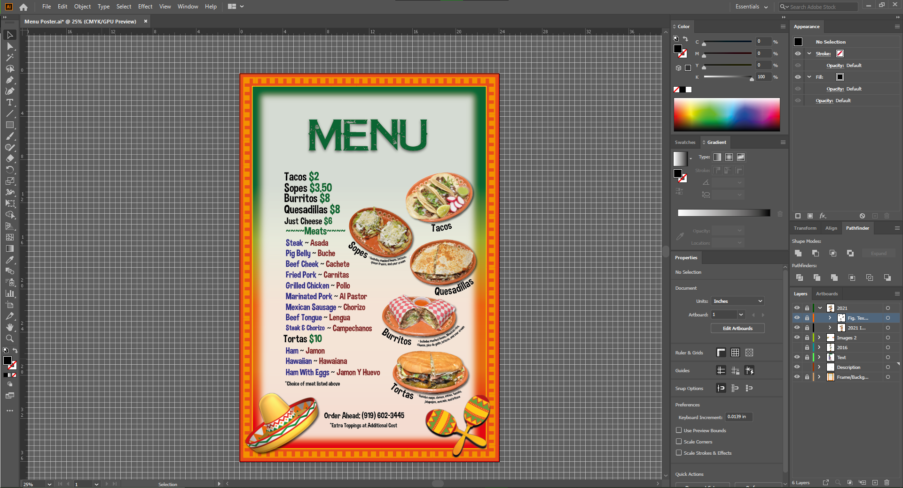

Business Side - Taco Truck
I grew up in a small business family and they own two taco trucks. Our company is simply called "The Taco Truck." The problem is the menu because I saw the customer struggle looking from the distance while in a waiting line. I created a new menu which is a poster instead of a A4 paper attached to the window. It is successful for customers where they can see the menu better.
I am an intermediate for Illustrator Adobe and Photoshop Adobe Software and I use it for business. I created a first menu using Illustrator and it was successful, but it needed more improvement. I recreated the second menu because the pictures were from internet. I wanted to make our own pictures. I took the pictures of our foods and edited them using Photoshop Adobe Software.


The size for poster is 24" x 36" and we used the frame poster with to attach the designing poster.